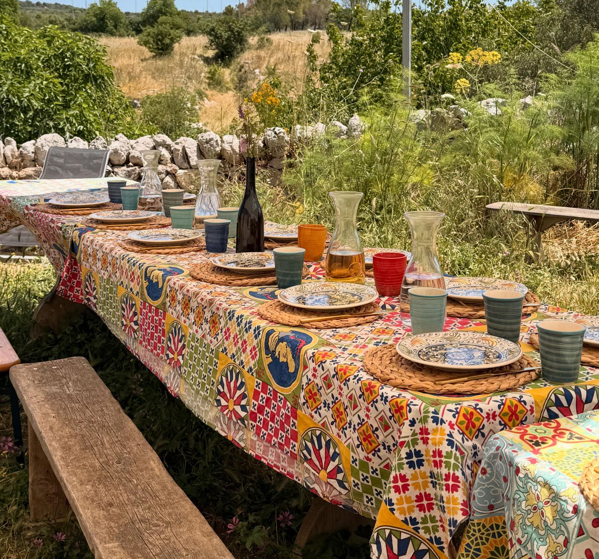

Back to the Old Table
When the food is on the table, we play an ancestral table game. It is a ceremony that connects us to the memory of this land and to what our grandparents taught us: the traditional way of being together at the table.

Why the table
For thousands of years the table was where families argued, laughed, made peace and passed things on. Today most meals are eaten fast, alone, or beside a phone.
Every day at our farm we watch what happens when strangers cook together and sit down at one long table. By dessert they are singing. Back to the Old Table is the name we give to that moment. It is part of every food journey at our farm.
An ancestral game, and a surprise.
We will not tell you the rules here. The game is best discovered at the table, the way our grandparents passed it on to us. What we can say is that it celebrates the ancestral knowledge of this land, that children and grandparents play it together, and that everyone leaves the table closer than they sat down.
This is how lunch ends at our farm.
Guests who met that morning leave like old friends. How it happens is the surprise. Come and play it with us at the Sunday lunch.
Book the Sunday LunchEveryone has a place at the old table.
Children
They join in with everyone else, and are often the bravest singers at the table.
Guests who do not drink
Toast with water or our homemade soft drinks. The game is the same.
The shy ones
Nobody is pushed. A short story or a few kind words count as much as a song.